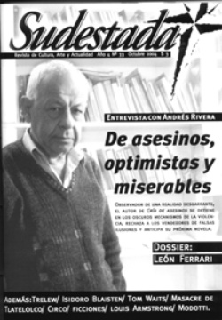

Buscar
Los muertos
Edición N° 33
Octubre 2004
Revista bimensual
Comprar edición impresaSumario
- Andrés Rivera: "Es mucho más fácil ser fascista que socialista"
- Sobre la pasión
- Isidoro Blaisten: "El humor no se compra en la farmacia"
- Trelew: La patria fusilada
- ¿La muerte del circo?
- León Ferrari: Devorador de infiernos
- Los muertos
Compartir Articulo
"Sólo entonces comprendí que morir es no estar nunca más con los amigos."
Gabriel García Márquez
Me desperté hace un rato, muy temprano. Sin vestirme, sin mirar la esbelta desnudez del cuerpo de Irina, dejo la suavidad arrugada de la cama -los pliegues que las horas allí dormidas y las pasiones nocturnas marcaron en las sábanas violetas- tratando de no hacer ningún ruido ni movimiento brusco que la despierte, menos por consideración a su sueño que por ganas, necesidad casi, de estar solo.
Con el sonido de la lluvia como música de fondo, como banda sonora de las seis de la mañana de este domingo de verano, empiezo un inventario de la habitación, de los objetos que pueblan el living de este departamento al que me mudé ayer, que hará las veces de mi nueva casa.
Hay un sillón grande, mullido, en el que me aplasto. Hay una mesa ratona con platos, restos de comida, una botella de vino vacía, cubiertos sucios, dos copas usadas, un vaso limpio. Hay un equipo de música y un montón de CDs tirados en el suelo. Hay un florero, con una única flor. Hay varias cajas llenas de libros, mi mejor tesoro, acaso el único. Hay una botella de Johnny Walker Etiqueta Azul sin abrir, que me regaló el Vasco, arriba de una de las cajas.
Hay dos valijas, con ropa. Hay un ventilador de techo ronroneante para el húmedo calor de un día cualquiera de verano.
Hay una computadora sobre un escritorio, junto a un gran ventanal con una vista espléndida del lado caro de La Ciudad.
Hay un gato, que me trajo Irina ayer -para tu nueva casa, dijo, me pareció mejor que regalarte una planta-, junto con las dos botellas de vino que tomamos en la cena.
Me acerco al equipo de música y pongo un disco, bajito para no despertar a Irina y para que Piazzolla se mezcle dulcemente con el sonido de las gotas contra la ventana. El primer tema es Ausencia.
Sobre una de las valijas hay una bolsa con una vasta pila de cartas de Kaplán, el israelí demente. Viejas cartas de cuando, una vez más, nos habíamos ido de La Ciudad por distintos rumbos y soñábamos con volver, una época en que nos escribíamos dos o tres cartas mensuales y cultivábamos la amistad epistolar, ese diálogo diferido en el papel.
Tomo la primera de la pila y leo: «Afortunadamente hay mentiras bienintencionadas que quedan en pie: que el espíritu puede evadirse y ser libre y creador y sensible, que el futuro es territorio virgen, la venganza posible, el tiempo mucho y generoso, que la ignorancia no es invencible y el amor de una mujer puede superar todas las miserias, que uno es la retaguardia de sus amigos.»
»Si, Nietzsche, lo que no me mata me fortalece, Ay, Frederich, ay, lo que no me aniquila me deja parapléjico.»
»De pie nosotros, los muertos.»
»El fantasma de mi espíritu sigue soñando con matar a dios; con poner al odio en el trono, al odio que es justicia.»
Me estiro hasta la botella de whisky, la destapo y sirvo un poco en el vaso limpio pero no bebo todavía, juego con el liquido ambarino y traslúcido, dejo que mis fosas nasales se dilaten y se llenen del aroma de los quince años y la inmensa sabiduría de los escoceses.
Al gato le gusto. Se sube al sillón y se acomoda contra mi pierna de forma tal que puedo llegar hasta el vaso -ahora sí, tomo un trago, que calienta la lengua y entumece los sentidos- y él dormir sin molestarnos.
Se podría llamar Lönnrot, propuso Irina cuando lo trajo.
No sé, dije, Lumpen me gusta más.
Y así creo que se va a llamar: Lumpen. Un homenaje a los años pasados, a los días de furiosas peleas en el Docke, cuando todos éramos aún jóvenes e inmortales y el fracaso de nuestros planes, que nos había dejado sin norte, nos invitaba a cualquier aventura, siempre que fuera peligrosa y sin sentido.
Un gato implica un lugar al que llegar, o mejor: un lugar al que volver, dijo Irina, que empieza a apostar, a invertir.
Yo pensé mejor ni lo intentes, nena, no es mucho lo queda, Lala no dejó nada en pie; pero no lo dije
Un gato puede ser un hogar, sugirió.
Y es cierto, pienso ahora mientras lo acaricio. Un gato puede ser un hogar, lo más parecido a una patria que puedo concebir.
Patria y Hogar, pienso, sólo me falta Dios.
Me río.
Después decido que mejor voy a hacer mate y me dejo de whisky y boludeces.
La alfombra, los muebles y los almohadones son blancos, las paredes anaranjadas. El gato -que es chiquito y de un color que no llego a definir, un color que con elegancia, con paso gatuno, se escapa de mi percepción cromática- me sigue a la cocina.
Pongo a calentar el agua, saco el equipo completo del segundo estante de la despensa y preparo el ritual: lleno el mate en tres cuartas partes, lo sacudo boca abajo para despojarlo de los restos de polvo, después hago la isla en una mitad y agrego agua tibia en la otra; cuando la yerba se hincha clavo la bombilla en diagonal y espero que el agua termine de calentarse, un poco antes del punto de hervor.
El ventanal que da a la Avenida General Lanza, me llama.
Con el termo bajo el brazo y el mate en la mano, como un uruguayo, me paro muy cerca del ventanal casi tocando el vidrio, y mis ojos se llenan de La Ciudad que se despereza y amanece: el Hipódromo, el Campo de Polo, la anchísima Avenida ladeada por edificios altos y curiosamente bellos, el enredado de los cables telefónicos y las seis de la mañana del domingo vistos desde el piso diecisiete.
El cielo empieza a aclarase, a perder el denso azul de la noche a favor de un gris acerado, como de plata bruñida. El lado caro de La Ciudad tiene hasta un cielo mejor, pienso, mientras cuento las estrellas que, pese a la llovizna, quedan rezagadas en este amanecer de enero.
Cebo el primer mate, espumoso y caliente. Una chupada larga me devuelve la certeza tantas veces confirmada: esta es la bebida perfecta, una bebida con alma, que, como el whisky, se bebe con la lengua y el paladar y guarda su sentido último en el reflejo que deja en el final de la garganta.
Saco un puñado de cartas de la bolsa y vuelvo a ese diálogo de fantasmas. Tomo mate y leo párrafos de cartas de hace varios años atrás.
Un muerto escribe.
Un muerto lee.
Acá un muerto con mi nombre, algunos recuerdos, unos pocos gestos, el eco de mi voz.
Allá un muerto del que nunca pude hacer luto: el isarelí demente, el Perro ventrílocuo de Dios, la última línea de defensa.
En medio -entre esas cartas y esta noche- los días salvajes, los cambios de piel, los repetidos exilios y regresos, las mujeres, los desencuentros, su desprecio, mi odio, la tristeza, la realidad. Las tristezas de la realidad.
Y es leyendo que cedo a la tentación. El gato me sigue hasta el escritorio y se echa al lado de mis pies, yo me siento frente a la computadora y la enciendo.
Como decíamos ayer, escribo.
Recomenzar, escribo después, esa es la palabra, como le gustaba repetir a un gran amigo nuestro.
Escribo, escribo. Escribo sabiendo que es inútil.
Un muerto escribe.
El fantasma del tipo que yo era hace diez años, imita el gesto y las formas de aquellas cartas y escribe.
Un muerto lee.
La sombra que mi memoria refleja del tipo que él era hace diez años lee.
Borro todo lo escrito y la pantalla vuelve a ser blanca, como los almohadones, la alfombra, el sillón.
Leo otra carta de la pila. Al terminarla, tomo la siguiente. Y leo.
Sonrío a esas páginas de sabrosa conversación, trato de dialogar con aquel que las escribió, pero él me ignora. Y hace bien; está hablando con su amigo y en esa charla yo sobro.
Leo: «No sé muy bien que decir, camarada.» Me gustaría volver a una noche perfecta. Me gustaría estar sentado, bajo una lluvia torrencial, en la esquina de Santa María y Anchorena, en la puerta del almacén de la griega, justo en la ochava. Me gustaría estar tomando cerveza de la botella, escuchando la lluvia, alerta a la presencia de la policía. Y me gustaría decirte, esta vez sí, que te voy a extrañar cuando me vaya nuevamente de La Ciudad, que me vas a preocupar y alegrar, que me vas a seguir acompañando todos los días, que ninguna posibilidad de paliza en un Docke desierto parece muy grave si vos estás cerca.»
Es curioso que uno esté preparado, que tome como algo natural la ruptura con la que creyó la mujer de su vida, pero nos cueste tanto digerir que una amistad puede perderse así como así, entre la noche y la nada. Ya fue dicho: las tristezas de la realidad.
Recuerdo que para terminar una discusión, la última, uno de los dos dijo pongamos sobre esto un manto de piadoso silencio, por los amigos que una vez fuimos.
Los amigos que una vez fuimos, escribo ahora.
Escribo: una vez fuimos merecedores de esa amistad perfecta, blindada, y eso, Kaplán, es mucho más de lo que casi todos los mortales pueden decir. Después, escribo, dejamos de merecerla.
¿Para qué, o mejor, por qué esta carta, entonces?
Para tratar de volver, pienso.
Volver, escribo.
Pienso que ese y no otro es el gran sueño de lo imposible.
Volver, esa es la Utopía que estamos persiguiendo desde hace tantos años, sin resultado.
Volver. Volver al barrio, a los días mejores, a una noche perfecta, con la frente marchita, vencido a la casita de mis viejos. Volver y ser millones. Volver para repetir las horas o para corregirlas.
Volver.
Utopía, No hay tal lugar.
Le escribo a un muerto, escribo entonces.
El muerto que habita en mí me dicta palabras para que se las escriba al amigo que le dice, desde una hoja poblada por los hermosos caracteres de una Underwood prehistórica, leída mil veces, gastada por años del roce de los dedos y los vasos y los dobleces: «De pie nosotros, los muertos.»
Y no escribo lo que me dicta sino esto que lees, escribo. Quizá buscando entrelíneas, escribo, se podría encontrar al menos el eco de su voz.
Pero no escribo lo que él me dicta sino estas líneas de mierda, escribo, entre las cuales, si enviara esta carta, vos no vas a dejar que el muerto que te habita lea lo que su amigo -desde un departamentito en la calle Gascón, años atrás, borracho de alcohol y confusión y libros y el amor de una mujer llamada Lala- le dice, y que ni vos ni yo podemos entender.
Probablemente veas en esta carta la retórica de un traidor, de un imbécil, de un muerto, escribo. No serías extraño, ya casi nada nos une y hay sólo nueve palabras en estas páginas que tienen alguna importancia, escribo, el resto es vacuidad.
Un muerto escribe.
Un muerto lee.
Me gustaría no recibir nunca respuesta, ni acuse de recibo, ni nada, que tires esta carta a la mierda ni bien termines de leerla y vuelvas a tus cosas; escribo sabiendo ya que nunca la voy a imprimir, que nunca la voy a mandar,.
Buenos días, dice Irina, parece que madrugamos hoy. Tiene los ojos lagañosos e hinchados, el pelo revuelto, la boca tumefacta de quien recién se despierta; sube el volumen de la música. El gato se estira a mis pies y el pulso intenso de Libertango se estira por todo el departamento, crece y lo llena.
Hola, contesto, querés un mate?
No, dice, no todavía.
Me cebo otro entonces y sin guardar lo escrito, sin imprimirlo, sin seguir siquiera los pasos correctos, apago urgido la computadora y las voces del pasado. Más allá del ventanal, el día muestra su rostro; más acá, los muertos ocultan el suyo.
Comentarios
Enrique Ferrari
Articulos más vistos


LIBRERÍA SUDESTADA

Colección infantil

Distribuidora de Libros

Suscripción

Sudestada en URUGUAY

Otros articulos de esta edición
Andrés Rivera: "Es mucho más fácil ser fascista que socialista"
Un país desgarrado por un pasado sangriento, engendra nuevos asesinos. Los educa en la miseria, los prepara en las comisarías, ...
Isidoro Blaisten: "El humor no se compra en la farmacia"
Para Isidoro Blaisten (1933-2004), su último libro Voces en la noche, fue mucho más que una primera novela. Fue el ...
¿La muerte del circo?
El circo como manifestación popular no escapa a la crisis y se ve perjudicado por la arremetida de grupos ecologistas ...
León Ferrari: Devorador de infiernos
Conversaciones con el artista conceptual que supo vincular arte, ideología y política en su obra, y que desató una polémica ...
Trelew: La patria fusilada
Se estrenó Trelew, el documental de Mariana Arruti sobre la fuga carcelaria y los fusilamientos políticos de 1972.